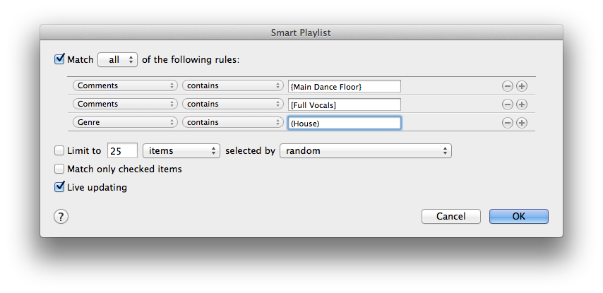
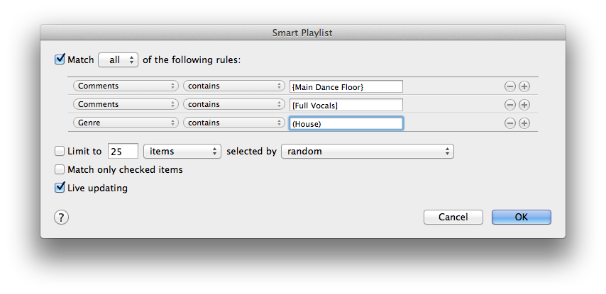

Smart Playlists
The "smart playlist" feature of iTunes allows you to construct playlists, based on search results for the tags added from QuickTag:

Refer to the iTunes documentation for more detailed information on smart playlists.
The "smart playlist" feature of iTunes allows you to construct playlists, based on search results for the tags added from QuickTag:

Refer to the iTunes documentation for more detailed information on smart playlists.